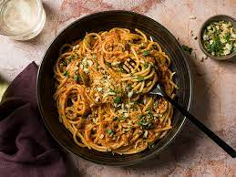

Pasta Reciped
This simple pasta dish is bursting with flavor from the combination of garlic, tomatoes, and fresh basil. It's quick and easy to prepare, making it perfect for a weeknight dinner. The addition of Parmesan cheese adds a rich and savory element, while the red pepper flakes provide a subtle kick of heat. Enjoy this classic Italian-inspired dish as is or customize it with your favorite ingredients such as grilled chicken, shrimp, or vegetables.
Indegrents:
- Pasta (such as spaghetti, penne, or fettuccine)
- Olive oil
- Tomatoes (fresh or canned)
- Fresh basil
- Parmesan cheese (grated)
- Red pepper flakes (optional)
- Salt and pepper, to taste
Steps:
- Bring a large pot of salted water to a boil. Add the pasta and cook according to package instructions until al dente. Drain the pasta, reserving a cup of pasta water, and set aside.
- In a large skillet, heat olive oil over medium heat. Add minced garlic and sauté until fragrant, about 1-2 minutes.
- Add chopped tomatoes to the skillet and cook until they start to soften, about 5-7 minutes. Season with salt and pepper to taste.
- Add the cooked pasta to the skillet with the tomatoes and toss to combine. If the pasta seems dry, add some of the reserved pasta water to loosen it up.
- Tear fresh basil leaves and sprinkle them over the pasta. Stir to incorporate.
- Serve the pasta hot, topped with grated Parmesan cheese and a pinch of red pepper flakes for added flavor and heat.